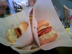

連休なのに地元のショッピングモールは混んでること…。まあいつものことなんだが。
ここにはFreshness Burgerがあるんだけど、そういえば製造元公認Spam Burgerというのが出たんだよなあ、と思い出す。早速食べてみました。見た目は結構ヘビーだが、ハンバーガーじゃなくてSPAM、要するにハムなんで、食べてみると当然塩気はきついものの比較的さっぱりした味でした。なんにもかかっていないキャベツのおかげですかね。
しかし、こんなのロートルソフト屋と沖縄ファン以外の誰が喜んで食べるんだろうか？
食後施設内にある書店へ。
以前からの傾向ではあるが、ほんとに文庫で読めるタイトルが増えたなあ。フーコー・コレクションもあれば、「アンチ・オイディプス」もある。一方、ハードカバーはこころなしか、値段が上がっているような気も…。
あんまり厚い本は後を引くので、新書で「男はつらいらしい / 奥田 祥子」と「マタイ福音書によせて - 宗教とは何か(下) / 田川建三」を買う。
戻って読み始めちゃったので、また一日休み。どちらもおもしろかったです。